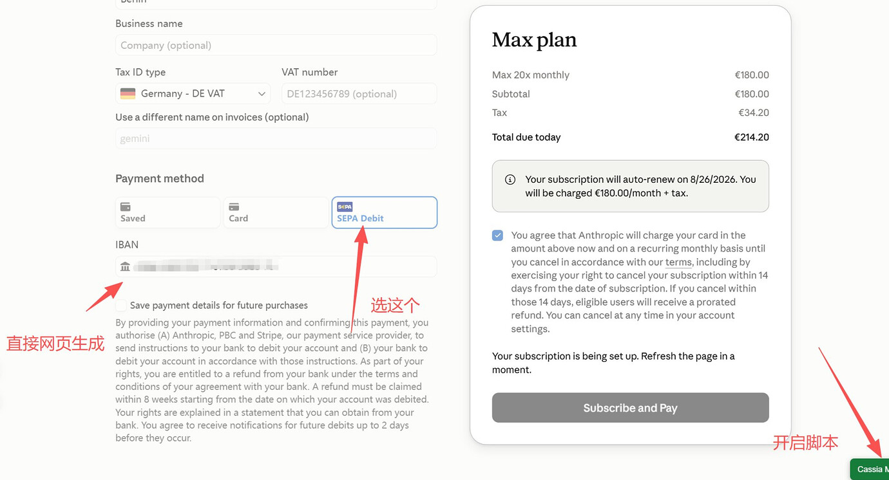
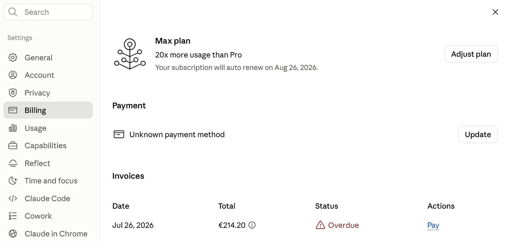
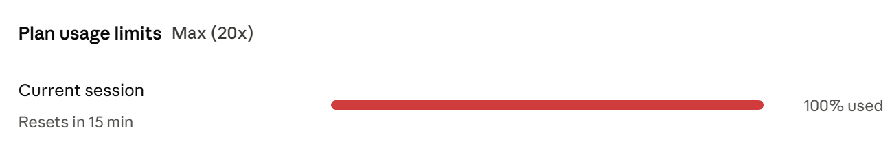
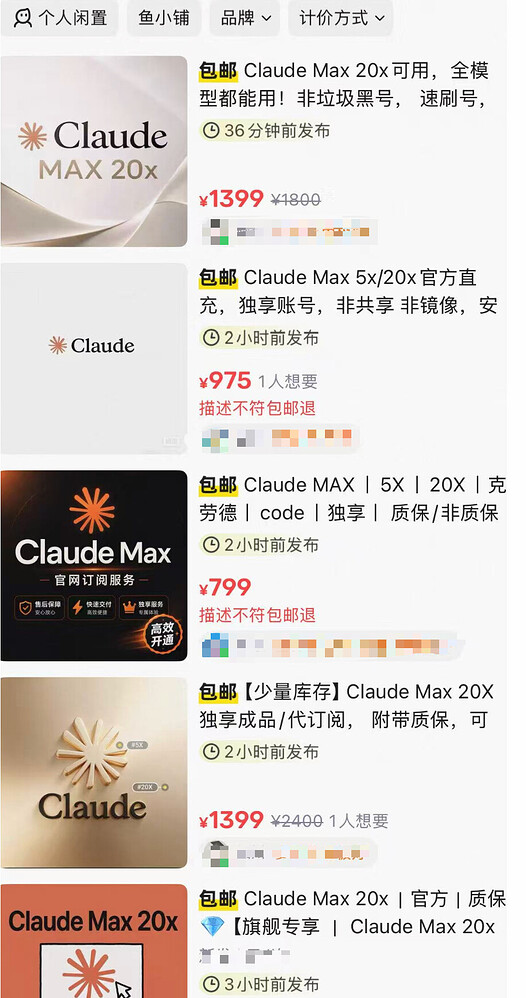
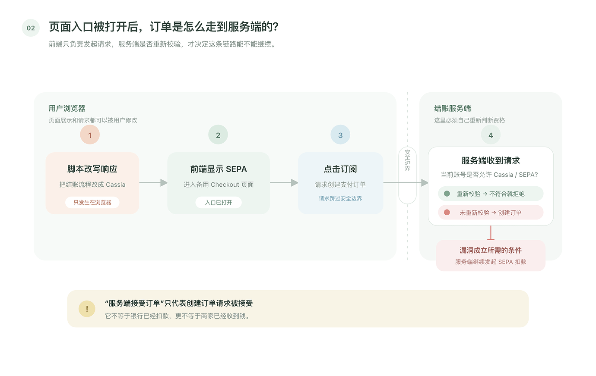
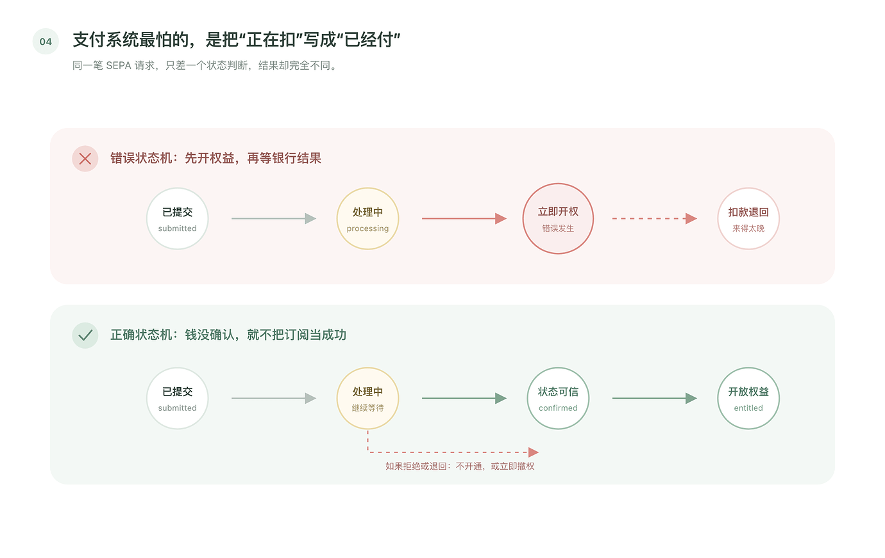
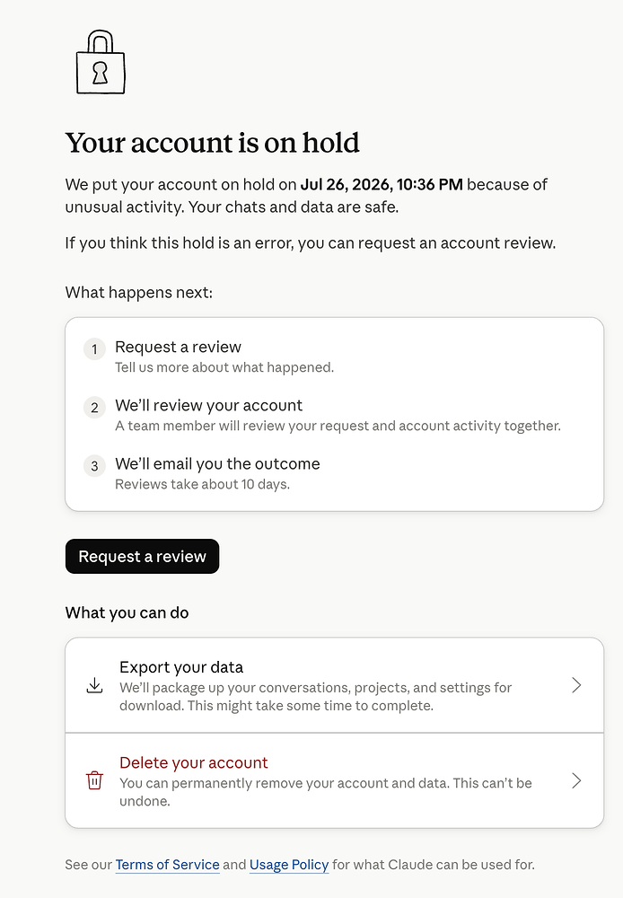

那天下午，我还在想下一篇文章写什么。群里突然有人贴出一段油猴脚本：在 Claude 网页端运行它，原本没有的 SEPA Debit 会出现在 Max 20x 结账页。再填入一个格式正确的 IBAN，页面就可能显示订阅成功。
消息很快扩散。有人消耗完一轮 Max 20x 额度，二手平台也出现了标价数百到上千元的账号。到了晚上，脚本已经失效，一批账号开始显示账单逾期或被置于 hold。
我不会在这里贴脚本、接口路径和 IBAN 生成器。理解这件事不需要复现欺诈，真正值得讨论的是两个[[信任边界]]为什么会同时失守。


这些截图能够直接支持四个判断：

二手平台截图只能证明有人在卖，不能证明商品全部可用、成交量有多大或卖家都用了同一种方法。“损失上亿美元”也没有数据支撑：账号数量、实际 Token 消耗和 Anthropic 的边际推理成本都不知道，用 API 零售价直接乘用量会高估损失。

从公开截图看，Claude 打开订阅页时会先请求一份 checkout_capabilities。正常响应里的 checkout_flow 是 legacy；脚本接管浏览器的 fetch 和 XMLHttpRequest 后，把浏览器收到的结果改成 cassia，于是备用结账页面被打开。
这属于典型的客户端可修改环境。按钮、变量和响应正文都在用户控制的浏览器里。MITRE 把“服务端依赖客户端执行安全控制”归入 [[CWE-602]]，对应的处理方式是在服务端重复执行资格和权限检查。
但这里必须加一个条件：只把 SEPA 按钮显示出来，还称不上漏洞。如果创建订单时，服务端重新计算账号地区、套餐允许的付款方式和用户是否有资格进入 Cassia，这次请求应该被拒绝。

现有截图显示部分请求继续走到了订单和订阅阶段，因此可以提出一个较强推断：这条备用结账路径至少曾经缺少某项服务端复核。但没有 Anthropic 的后端代码、订单记录和日志，无法确认它具体漏查了地区、付款方式、流程资格，还是多个系统之间的状态同步。
checkout_capabilities可以决定页面怎么展示，不能充当购买资格凭证。后者必须由服务端根据当前账号和商品重新计算。
IBAN 是国际银行账户号码，不是“德国银行卡号”。它的校验位可以判断字符串在数学上是否符合格式，却不能证明银行账户真实存在、属于提交者或有足够余额。
[[SEPA Direct Debit]] 也不是刷卡。用户授权商户发起扣款，银行结果稍后返回。Stripe 的 SEPA Debit 文档把它列为 delayed notification payment method，并说明资金通常需要约五个工作日到达。欧洲支付委员会的 R-transactions 指南也把 reject、return、refund、refusal 和 reversal 当作这套支付方式的正常异常流程。
所以“支付请求创建成功”与“钱已经不可逆地到账”是两个状态。格式正确的 IBAN 可能让请求进入 processing，真实扣款结果却要在后面才知道。
这里还有一个容易错怪支付平台的地方。Stripe 的订阅状态文档明确写到：使用异步支付方式时，订阅可能在创建后直接进入 active，而付款仍处于 processing。因此，出现时间窗口本身未必是 Stripe 的漏洞；商户需要根据商品成本和欺诈风险决定何时发放权益。

第一处是客户端[[信任边界]]问题，第二处是[[支付状态机]]与权益系统的关系问题。任何一处守住，整条路径都会断：服务端拒绝不合资格的 SEPA 订单，或者权益系统在付款未确认时只给极低的临时额度，都不会出现截图里的结果。
Stripe 建议订阅集成使用 [[Webhook]] 处理异步状态变化，并根据发票和订阅状态更新访问权限。对 Max 20x 这种可以迅速产生推理成本的商品，只监听“订阅已创建”不够；至少还要处理付款失败、账单逾期、重复事件和消息延迟，并定期核对“有权益但没有已付账单”的账号。
晚上出现账号 hold 后，我手里一个只做过登录的旧账号也受到了影响。这说明风控可能在关联账号，但无法仅凭结果判断它使用了设备标识、IP、浏览器指纹、付款资料、Cookie，还是其他关系。

“所有新用户都被禁了”也超出了现有证据。注册页在某个时间和地区显示暂不开放，只能证明当时的可用性变化，不能证明覆盖全部新用户，更不能单凭时间先后确认它由这次事件触发。
最稳妥的结论是：公开脚本能够欺骗浏览器选择 Cassia；部分账号随后出现了 Max 20x 权益、逾期账单和实际额度消耗。由此可以合理怀疑，备用结账流程缺少服务端资格复核，同时订阅权益在异步扣款最终确认前被提前放出。
还不能确认的是 Anthropic 内部使用了哪套订单状态、哪个 [[Webhook]] 延迟、权益在什么事件上发放，以及事件造成了多少损失。把这些推断写成已查明的后端事实，会让文章比现有证据走得更远。
这次事件留给订阅系统的检查项很具体：
油猴脚本只是把门画了出来。真正让人走进去的，是服务端和权益系统先后把两个尚未确认的状态，当成了可以相信的事实。